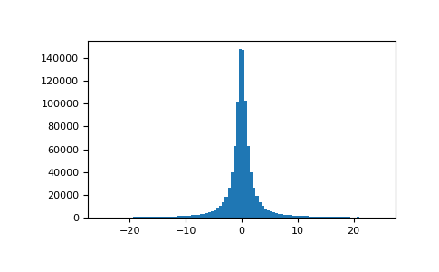

numpy.random.Generator.standard_cauchy#
method
- random.Generator.standard_cauchy(size=None)#
Draw samples from a standard Cauchy distribution with mode = 0.
Also known as the Lorentz distribution.
- Parameters:
- sizeint or tuple of ints, optional
Output shape. If the given shape is, e.g.,
(m, n, k), thenm * n * ksamples are drawn. Default is None, in which case a single value is returned.
- Returns:
- samplesndarray or scalar
The drawn samples.
Notes
The probability density function for the full Cauchy distribution is
\[P(x; x_0, \gamma) = \frac{1}{\pi \gamma \bigl[ 1+ (\frac{x-x_0}{\gamma})^2 \bigr] }\]and the Standard Cauchy distribution just sets \(x_0=0\) and \(\gamma=1\)
The Cauchy distribution arises in the solution to the driven harmonic oscillator problem, and also describes spectral line broadening. It also describes the distribution of values at which a line tilted at a random angle will cut the x axis.
When studying hypothesis tests that assume normality, seeing how the tests perform on data from a Cauchy distribution is a good indicator of their sensitivity to a heavy-tailed distribution, since the Cauchy looks very much like a Gaussian distribution, but with heavier tails.
References
[1]NIST/SEMATECH e-Handbook of Statistical Methods, "Cauchy Distribution", https://www.itl.nist.gov/div898/handbook/eda/section3/eda3663.htm
[2]Weisstein, Eric W. "Cauchy Distribution." From MathWorld--A Wolfram Web Resource. http://mathworld.wolfram.com/CauchyDistribution.html
[3]Wikipedia, "Cauchy distribution" https://en.wikipedia.org/wiki/Cauchy_distribution
Examples
Draw samples and plot the distribution:
>>> import matplotlib.pyplot as plt >>> s = np.random.default_rng().standard_cauchy(1000000) >>> s = s[(s>-25) & (s<25)] # truncate distribution so it plots well >>> plt.hist(s, bins=100) >>> plt.show()
